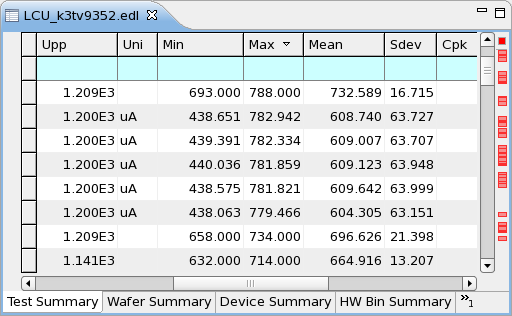
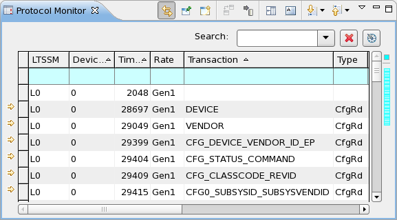

Sorting tables
Tables in the Data navigation views and Detail data views can be sorted by clicking a column title.
About this task
Sort a table to find rows with entries of a particular size in a column or to see all entries together that have similar values in a column (for example, all test with the same name).
Sorting a data navigation view has no effect on the Analysis views.
Before you begin
- Open the data navigation view or detail data view that you want to sort.
- In a data navigation view, open that tab that you want to sort.
Procedure
- In the table that you want to sort, click the title of the column by which you want to sort.
For example, to sort a test summary tab by the number of failed devices, click the F# column title.
The table is sorted by this column in ascending order; that is, the rows with the smallest values in this column appear at the top of the table. The sorting order is indicated by a triangle
 in the column title.
in the column title. - If you want to sort in descending order (largest values at the top), click the column title
again.
The rows are now sorted from large to small. The sorting order is indicated by an upside-down triangle
 .
. - To remove the sorting, click the column title again.
The rows are displayed in the system-defined order and the triangle is removed from the column title.
- For the Protocol Monitor view only: If you want to sort by additional columns, repeat steps 1 through 3 for these columns.
Results
Depending on how often you clicked the column title, the table is sorted by this column in ascending or descending order, or is unsorted.
Examples
Sorting by one column
Clicking the title of the Max column twice sorts the table in descending order by that column:

Sorting by multiple columns
To sort a table by the Device number column and sort all rows with the same device number by the Time column (both in ascending order):
- Click the title of the Device number column, so that it shows an upward-pointing triangle.
- Click the title of the Time column, so that it, too, shows an upward-pointing triangle.

Functional changes
- Introduced in SmarTest 7.2.0
- SmarTest 7.2.1: Added sorting of detail data views.
- SmarTest 7.3.2: Added sorting by multiple columns.